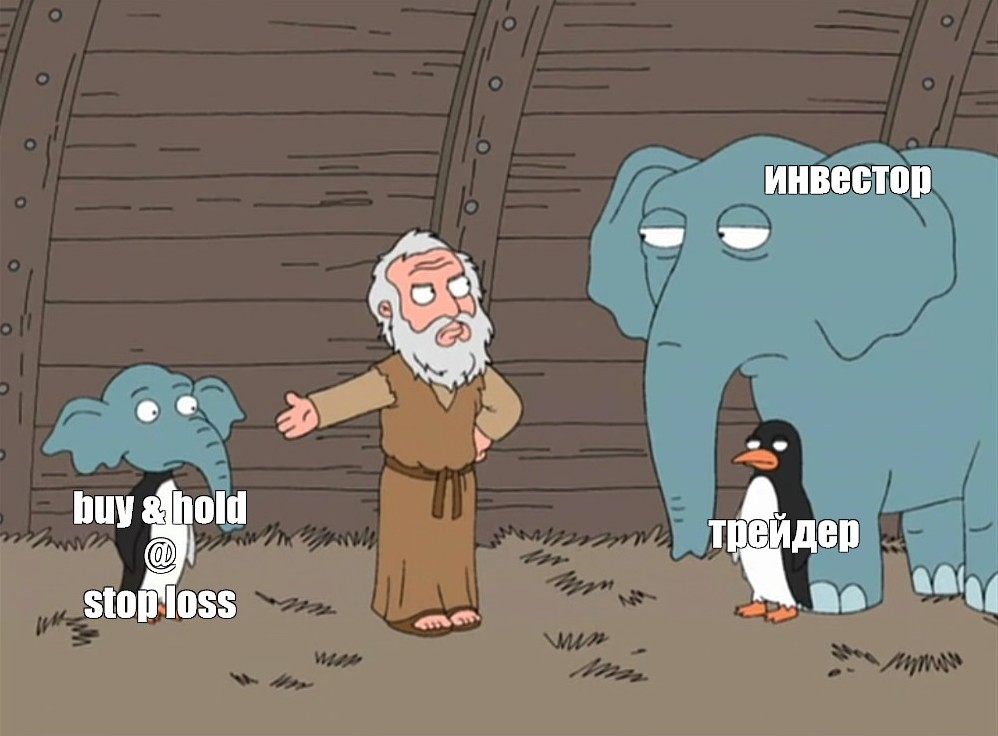
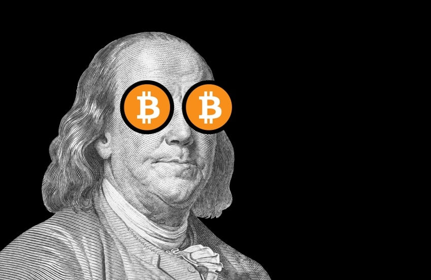

Инвестиции - это...?
Инвестиции — это финансовый инструмент, который предполагает вложение средств с целью получения прибыли.
Сущность инвестиций заключается в том, что инвестор вкладывает свои средства в ценные бумаги, имущество и права, имеющие ценность, в проекты, которые впоследствии приносят прибыль.
Инвесторы и трейдеры

Инвесторы, в отличие от трейдеров, играют «вдолгую»: покупают разные ценные бумаги, поддерживают необходимый уровень диверсификации и ждут, когда через много лет их капитал станет достаточно большим, а трейдер — инвестор, который получает прибыль на колебаниях цены актива, совершая краткосрочные сделки.
Wall Street
Wall Street - небольшая узкая улица в нижней части Манхэттена в городе New York, ведущая от Бродвея к побережью пролива East River. Считается историческим центром Финансового квартала города. Главная достопримечательность улицы — Нью-Йоркская фондовая биржа. В переносном смысле так называют как саму биржу, так и весь фондовый рынок США в целом. Сам финансовый район иногда также называют Wall Street.
Большинство самых успешных ( топовых ) трейдеров, инвесторов, спекулянтов, аналитиков и т.д., стекаются на Wall Street. Это место может превратить молодого, неопытного человека в самого великого и успешного, который может за одну сделку сделать несколько десятков миллионов $, а может и миллиард, как это сделал - Джордж Сорос.
Джордж Сорос - американский трейдер, финансист, инвестор и филантроп. Создатель сети организаций, известных как «Фонд Сороса». Член исполнительного комитета International Crisis Group. На сентябрь 2019 года его состояние оценивалось в $8,3 млрд.
В 1992 году Джордж Сорос поставил Банк Англии на колени и в процессе присвоил себе больше миллиарда долларов. Заключив изящную, продуманную сделку против британской валюты, он заработал целое состояние и в один день разрушил денежную систему Великобритании. Это единственный человек в истории, который заработал с одной сделки больше $1 млрд. Кстати, он внук самого первого миллиардера в истории "Джона Дэвисона Рокфееллера" - с учётом инфляции The New York Times оценивает его богатство около $305 млрд. в эквиваленте 2006 года, или $423 млрд. в эквиваленте 2021 года.
Сложные проценты
Сложный процент — это начисление процентов и на начальную сумму, и на проценты за предыдущее время, т. е. проценты на проценты.
Акции и облигации
Если инвестор покупает акцию какой-то компании, он становится собственником её маленькой части. Он имеет право на долю в прибыли компании или долю её имущества. Чем больше акций принадлежит инвестору, тем большей долей компании он владеет.
Облигации — это долговые бумаги, и покупая их, инвестор на определенный срок даёт свои деньги в долг эмитенту. И за это эмитент регулярно перечисляет денежные выплаты всем держателям облигаций. Такие выплаты называют купонами.
Фьючерсы и опционы
Фьючерс подразумевает обязательства для обеих сторон: продавец обязан продать, а покупатель купить выбранный актив на оговоренных условиях.
Опцион — это договор, по которому покупатель опциона получает право купить/продать какой-либо актив (товар, ценная бумага, валюта и др.).
Что такое биржа?
Биржа – это площадка, где покупатели и продавцы могут заключать сделки между собой.
Мировые биржи:
1) NASDAQ
2) NYSE
3) Франкфуртская фондовая биржа (FWB)
4) Гонконгская фондовая биржа (Hong Kong Stock Exchange)
5) Лондонская фондовая биржа (the London Stock Exchange)
Мировые криптобиржи:
1) Binance
2) Coinbase Exchange
3) FTX
4) Kraken
5) KuCoin
Кратко про Forex
Forex – это рынок, на котором в режиме онлайн заинтересованные люди (трейдеры) меняют одну иностранную валюту на другую по курсу крупнейших глобальных внебиржевых участников.
Крипто что?
Криптовалюта
Криптовалюта - это любой вид валюты в цифровой или виртуальной форме. Также, это средство платежа, которое существует только в интернете. У нее нет бумажного выражения. Важно: крипта построенная на блокчейне валюта, которая существует только в интернете
Обычно, чтобы перевести деньги от одного человека другому, нужен посредник — банк. С криптовалютой по-другому: в обмене банк не участвует. Криптовалюта построена на системе блокчейн — цепочке информационных блоков. Их используют для перевода цифровых денег от человека к человеку без посредника.
В основном крипта меняется благодаря нескольким факторам:
1) Власть и СМИ
Например: Китай запретил добычу криптовалют и цена упала сильно вниз.
Ещё один пример, когда популярный бизнесмен выложил новость про одну крипту, что она перспективная и тут же её цена полетела вверх.
2) Финансовые кризисы
Цена криптовалют также зависит от экономической ситуации в различных странах. Если традиционная финансовая система начинает рушиться, люди паникуют и выбирают для инвестиций альтернативные активы. В этих случаях биткоины для инвесторов становятся для них гораздо лучшей формой сбережения капитала, чем инфляционные фиатные деньги. Таким образом, кризисы имеют тесную связь с обменным курсом виртуальных валют: чем больше людей выходит на этот рынок, тем выше его капитализация.
3) Стоимость майнинга цифровой валюты

Криптовалюты, такие как биткоин, не возникают из ниоткуда. Добытчики криптовалют (так называемые майнеры) добывают (майнят) их с помощью специального оборудования - высокопроизводительных компьютеров. Со временем этот процесс становится все более сложным. Таким образом, если затраты на майнинг будут расти, это не может не отразиться на цене криптоактивов.
4) Спрос
Изменение стоимости криптовалют (падение, сменяемое подъемом) в течение года объясняется рядом факторов, в числе которых – спекуляции на бирже криптовалют и низкая экономическая активность инвесторов. Если на биткоин есть спрос, его цена растет. Если спроса нет или преобладает его предложение на рынке, цена падает.
5) Конкуренция
Рынок криптовалют очень быстро растет и развивается. Вероятно, что в определенный момент Биткоин уступит позицию лидера более совершенным монетам. Но это будет не скоро. Большинство коинов прямопропорциональны движению Биткоина. Куда идёт он, туда и его альткоины.
Что такое блокчейн?
Блокчейн — это способ хранения информации по цепи. Записи о транзакциях участников сети кодируются, распределяются между другими участниками и формируют связанные между собой блоки. Если кто-то попытается внести изменения, чтобы получить валюту нечестным способом, например переписать существующую транзакцию или создать новую без согласия других участников, система сравнит эту информацию с другими базами данных и заблокирует операцию.
Формы криптовалюты
Токен — это единица учёта, не являющаяся криптовалютой, предназначенная для представления цифрового баланса в некотором активе, иными словами, выполняющая функцию «заменителя ценных бумаг» в цифровом мире. Токены представляют собой запись в регистре, распределенную в блокчейн-цепочке.
Токены можно использовать как инструмент для инвестиций и свидетельство права на бизнес, с их помощью можно участвовать в голосованиях или опросах.
Коин - это денежная единица криптовалюты, которая работает в собственном блокчейне. Ее можно добыть с помощью майнинга — предоставления системе вычислительных мощностей своего компьютера. Коины можно переводить другим пользователям системы блокчейн и продавать за обычную валюту. Некоторые компании принимают их в качестве оплаты товаров и услуг.
Например, Microsoft продает за биткоины операционную систему Windows и игровую приставку Xbox.
Есть коины, которые работают на переписанном блокчейне биткоина. Их называют альткоинами — альтернативными версиями биткоина.
Альткоин — это любая криптовалюта, запущенная после биткоина. Проще говоря, альткоины, коих уже сотни разновидностей, выступают в качестве улучшенных альтернатив биткоина. Они предлагают пользователям те или иные решения, отсутствующие у первой криптовалюты.
Кратко про NFT
NFT - это...
NFT - это сертификат, доказывающий, что вы владеете уникальным объектом в цифровом пространстве. Но этот сертификат не бумажный, а криптографический. Он позволяет, после покупки на бирже, строчками кода записать в блокчейне право на владение каким-то активом.

Где хранить NFT?
Верным решением для хранения NFT будет выбор некастодиального криптокошелька (где приватные ключи находятся только у пользователя) с максимальной поддержкой сетей.
Сколько стоит сделать NFT?
Размер комиссии OpenSea на январь 2022 г. составляет 2,5% или около 200 USD (0.05 ETH) для выставления NFT на продажу. Второй вариант – заплатить минимальную цену газа в размере 0,02 ETH (80 USD) для инициализации вашего кошелька в OpenSea, после чего комиссия не взимается. Создатель токена оплачивает газ транзакции только при первом размещении.

Как получить NFT?
Один из основных способов получения NFT — создание собственного токена на крупнейшем маркетплейсе OpenSea. Для этого необходимо иметь криптовалютный кошелек, например, MetaMask, а также картинку, видео, аудио или любой другой файл, который необходимо обернуть в NFT.
Как получить галочку на OpenSea?
1) Быть активным. Вы должны были купить или продать хотя бы один NFT за последние три месяца.
2) Настройте изображение профиля, адрес электронной почты и баннер.
3) Не иметь предыдущих ограничений за нарушение условий обслуживания OpenSea.